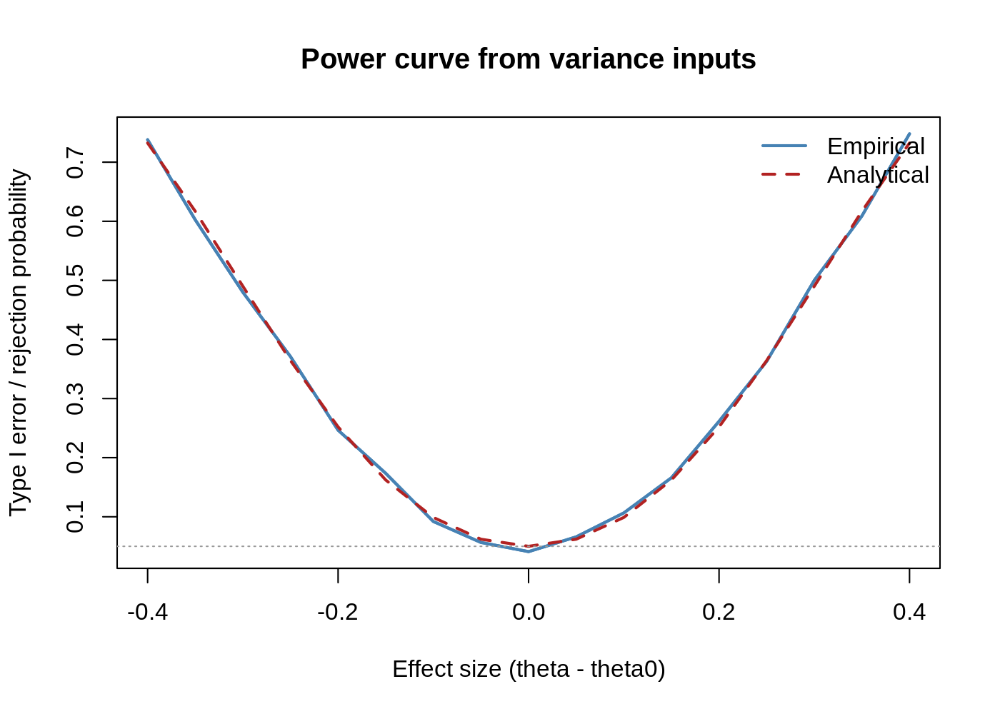
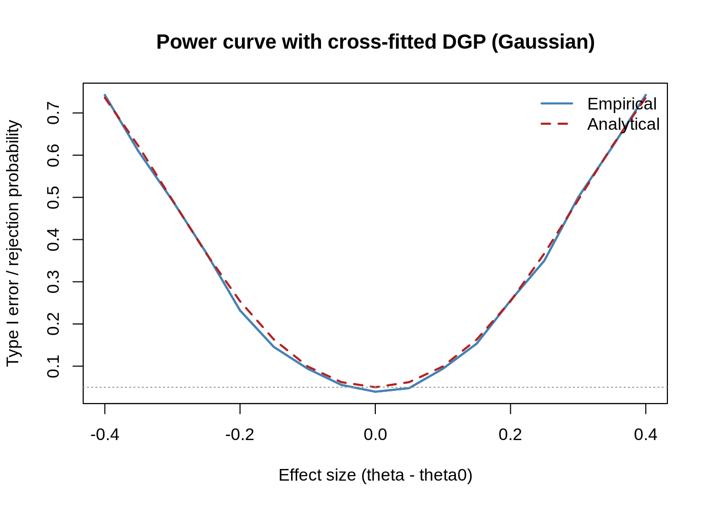

The goal of pppower is to conduct power analysis based on the Prediction-Powered Inference (PPI) framework. It is a convenient tools for planning and evaluating studies with PPI estimators. The package provides analytical formulas, Monte Carlo estimators, plotting helpers, and sample-size solvers for both mean estimation and linear regression (PPI-OLS) workflows.
You can install the development version of pppower from GitHub with:
# install.packages("devtools")
devtools::install_github("yiqunchen/pppower")This is a basic example which shows you how to solve a common problem:
Start with a cross-fitted superpopulation data
# Linear signal with coefficients 0.3, 0.8, ... and heavier Gaussian noise (sd = 2)
# Cross-fitted predictions (out-of-fold)
df <- simulate_crossfit_data(
n = 3500, p = 5, family = gaussian(), #
K = 5, seed = 20251007
)
str(df)
#> 'data.frame': 3500 obs. of 7 variables:
#> $ y : num -8.604 -0.121 2.387 1.222 1.246 ...
#> $ x1 : num -0.597 -0.215 0.678 1.876 -0.864 ...
#> $ x2 : num -0.156 0.543 -0.109 1.033 -1.44 ...
#> $ x3 : num -0.3061 0.6888 -0.2761 -0.0526 -0.4471 ...
#> $ x4 : num -1.192 -1.491 0.62 -0.268 0.453 ...
#> $ x5 : num -1.508 1.196 0.64 0.307 0.343 ...
#> $ fhat_cf: num -6.303 1.39 2.356 1.509 -0.385 ...
#> - attr(*, "family")= chr "gaussian"
#> - attr(*, "K")= num 5simulate_crossfit_data() builds a synthetic “superpopulation” with covariates, outcomes, and out-of-fold predictions (fhat_cf). These serve as inputs for both analytical formulas and Monte Carlo power simulations.
Mean-estimation toolkit
theta_true <- mean(df$y)
theta0 <- theta_true - 0.35
delta <- theta_true - theta0
var_f <- var(df$fhat_cf)
var_res <- var(df$y - df$fhat_cf)
N <- 3000
n <- 200
alpha <- 0.05
sim <- 2000
power_ppi_mean(delta, var_f, var_res, N, n, alpha)
#> [1] 0.6169984
simulate_power(delta, var_f, var_res, N, n, alpha, R = sim)
#> Exact Empirical
#> 0.6169984 0.6055000power_ppi_mean() returns the exact normal-theory power.simulate_power() confirms the formula empirically for any variance inputs.
mc_pp <- pppower:::simulate_power_ppi_mean(
df = df,
N = N,
n = n,
alpha = alpha,
R = sim,
theta0 = theta0,
seed = 20251007
)
mc_pp$empirical_power
#> [1] 0.61
mc_pp$analytical_power
#> [1] 0.6169984
n_mean <- n_required_PP(
delta = delta,
N = N,
alpha = alpha,
power = 0.8,
type = "mean",
var_f = var_f,
var_res = var_res
)
n_mean
#> [1] 340n_required_PP() now supports the PP mean, PP-OLS, and custom variance decompositions through the type switch (logistic regression in the future).
Linear Regression
fit_ols <- ppi_ols_fit(
y = "y",
f_col = "fhat_cf",
formula = ~ x1 + x2 + x3 + x4 + x5,
data_l = df[1:n, ],
data_u = df[(n + 1):(n + N), ]
)
summary(fit_ols)
#> Estimate Std.Error z Pr...z..
#> (Intercept) -0.0582027 0.1342167 -0.4336473 6.645446e-01
#> x1 0.2154943 0.1492191 1.4441473 1.486975e-01
#> x2 0.9815688 0.1251441 7.8435075 4.381330e-15
#> x3 1.3205945 0.1195599 11.0454653 2.305700e-28
#> x4 1.9493006 0.1307634 14.9070810 2.964310e-50
#> x5 2.3846676 0.1275478 18.6962608 5.310028e-78
pieces <- fit_ols$pieces
coef_names <- colnames(pieces$V_u) # matches V_u/V_l dimension
c_vec <- numeric(length(coef_names))
names(c_vec) <- coef_names
c_vec["x1"] <- 1
delta_ols <- sum(c_vec * fit_ols$coef)ppi_ols_fit() returns coefficient estimates, sandwich covariance, and the Vu, Vl components required for power calculations.
ppi_ols_wald() offers Wald tests for arbitrary contrasts.
# superpopulation contrast for the given c
X_full <- model.matrix(~ x1 + x2 + x3 + x4 + x5, df)
beta_true <- pppower:::ols_fit(X_full, df$y)$coef
contrast_true <- sum(c_vec * beta_true)
# the effect size you want to study
delta_target <- delta_ols # if you want to stick with the sample estimate
theta0 <- contrast_true - delta_target
pppower:::power_ppi_ols(
delta = delta_target,
V_u = pieces$V_u,
V_l = pieces$V_l,
N = pieces$N,
n = pieces$n,
c = c_vec,
alpha = alpha
)
#> [1] 0.3033231
pppower:::simulate_power_ppi_ols(
df = df,
formula = ~ x1 + x2 + x3 + x4 + x5,
N = pieces$N,
n = pieces$n,
c = c_vec,
theta0 = theta0,
alpha = alpha,
R = sim,
seed = 20251007
)$empirical_power
#> [1] 0.3285
n_ols <- n_required_PP(
delta = delta_ols,
N = pieces$N,
alpha = alpha,
power = 0.8,
type = "ols",
V_u = pieces$V_u,
V_l = pieces$V_l,
c = c_vec
)
n_ols
#> [1] 753Mean Estimation
effect_grid <- seq(-0.4, 0.4, by = 0.05)
curve_fixed <- type1_error_curve_mean(
effect_grid = effect_grid,
N = N,
n = n,
var_f = var_f,
var_res = var_res,
alpha = alpha,
R = sim,
seed = 20251007
)
plot_type1_error_curve(
curve_fixed,
main = "Power curve from variance inputs"
)
Cross-fitted Data Generation Processes
curve_dgp <- type1_error_curve_mean_dgp(
effect_grid = effect_grid,
N = N,
n = n,
family = stats::gaussian(),
superpop_n = 10000,
p = 5,
K = 5,
alpha = alpha,
R = sim,
seed = 20251007
)
plot_type1_error_curve(
curve_dgp,
main = "Power curve with cross-fitted DGP (Gaussian)"
)
plot_type1_error_curve() is shared by both outputs and lets you overlay empirical/analytical curves and nominal reference lines.
Reference of key functions
simulate_crossfit_data(): synthetic GLM data with cross-fitted predictions.simulate_power() / simulate_power_ppi_mean() / simulate_power_ppi_ols(): Monte Carlo power.
Analytical power: power_ppi_mean(): PP mean estimator. power_ppi_ols(): Linear contrasts in PP-OLS.
Estimation & inference: ppi_ols() (currently internal), ppi_ols_fit(), ppi_ols_wald() (currently internal).
Planning: n_required_PP(): unified sample-size solver (type = “mean”, “ols”, or “custom”).
Plotting: power_curve_mean(), power_curve_mean_dgp(), power_curve_gaussian(), power_curve_binomial(). type1_error_curve_mean(), type1_error_curve_mean_dgp(), plot_type1_error_curve().
Each example above is self-contained; adjust Monte Carlo replicates (R) upward for production studies.
devtools::test() before submitting changes.